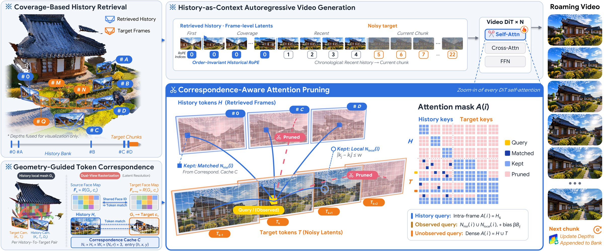

Geometry-guided token correspondence
Each retrieved frame is lifted into its own local mesh — no global fusion. Rasterized under the history and target cameras, a shared triangle ID links each target token to its source token.
arXiv 2026
1State Key Laboratory of CAD&CG, Zhejiang University 2LIGHTSPEED 3HKUST(GZ)
Given a single image, a text prompt and a camera trajectory, SPARC generates minute-long videos that precisely follow the prescribed camera and faithfully restore previously observed content upon revisitation.
A walkthrough of the project page, showcasing minute-long video generation, our motivation, method visualizations, comparisons with baseline methods, and extensions to dynamic scenes.
One DL3DV chunk in 3D: the 9 retrieved history frames (left) with their cameras, and the target cameras appearing as the 72 target frames are generated (the panel plays the generated frame of the newest camera). The target trajectory moves into regions that the history has already observed.
Where does each target token need to look? On the same chunk, 90.6% of the target tokens already have a geometric correspondence in the 9 retrieved history frames, and an observed query matches only about 10 of 14,040 history tokens. Newly revealed regions have no match and keep dense attention. Geometry-guided pruning keeps only 18% of the query–key pairs on this chunk.
SPARC is a geometry-guided attention pruning framework that directly restructures the native self-attention of a pretrained video diffusion transformer. For each target chunk, it constructs token-level correspondences with retrieved historical observations through per-history local geometric projection, and applies asymmetric attention pruning based on target-region visibility.
Geometry determines where the pretrained model attends — attention pruning serves as geometric conditioning and memory addressing, rather than merely a computational optimization.
Each retrieved frame is lifted into its own local mesh — no global fusion. Rasterized under the history and target cameras, a shared triangle ID links each target token to its source token.
Observed queries attend only to their matched history and a local spatiotemporal window; unobserved queries keep dense attention. A correspondence bias strengthens the matched history.
Coverage-based retrieval selects a compact history, and a shared RoPE index makes it order-invariant. With 4-step DMD, the DiT runs 53.6× faster per chunk.

System overview. For each target chunk, SPARC establishes token-level correspondences with historical observations through local geometric projection, and prunes the backbone's native self-attention to focus on geometrically corresponding historical tokens and local spatiotemporal context for previously observed regions, while newly revealed regions retain dense attention. Historical RoPE re-indexing removes artificial temporal ordering among the retrieved observations; generated observations are appended to the history bank for continuous rollout.
The pipeline figure built up step by step: retrieval, per-history correspondence, the concatenated token sequence with shared historical RoPE index, and the three attention scopes of the pruned self-attention.
Along a 12-chunk roaming trajectory: for every target frame, each retrieved history frame contributes its own local mesh; rays from the target camera through the sampled target tokens hit the mesh, and the hit face identifies the source token (same colours in the target and history frames). Right: all local geometries overlaid — no global fusion — and the chunk's exact attention mask with the current target latent highlighted.
Controlled novel-view generation on Tanks and Temples: camera-calibrated multi-view images serve as the history, and a 72-frame chunk is generated along a held-out trajectory with ground truth. All variants share identical data and training settings.
Masks are exact for this chunk (42,120 tokens, 99.0% of the target observed), drawn over [history | target] token rows; matched history is drawn by presence, so its sparsity is understated visually.
Coverage keyframes are selected by geometric relevance, so their concatenation order carries no temporal meaning. Shuffling the retrieved history (here to ) changes the output under sequential RoPE, while our shared historical index produces nearly identical videos.
Given the same first frame and ground-truth camera trajectory, each method autoregressively generates a 45-second video. We compare against explicit-3D approaches (Lyra2, Spatia, WorldStereo, UCM) and implicit approaches (WorldPlay, Lingbot-World, Infinite-World). Below, camera trajectories estimated from the generated videos with ViPE and Sim(3)-aligned are compared with the ground truth. SPARC keeps both the scene appearance and the camera path throughout the rollout.
Videos are downsampled by 2× in each dimension and sped up 2× to reduce storage requirements.
We generate closed-loop camera trajectories on WorldScore-Static to evaluate long-horizon revisitation. Since each trajectory returns to previously observed viewpoints, a model with consistent memory should reproduce the same content when the camera revisits it. GT shows the input reference image. SPARC faithfully restores the scene, whereas baselines distort it or fail to recover the originally observed content.
Videos are downsampled by 2× in each dimension and sped up 2× to reduce storage requirements.
Although trained exclusively on static scenes, SPARC extends to dynamic scenes without additional training. Since geometric correspondences govern the scope of historical attention, manipulating them enables controllable object motion while preserving background consistency: we segment the foreground object and shift its correspondence locations along a prescribed motion trajectory, and SPARC synthesizes natural object motion consistent with that trajectory.
@article{yang2026sparc,
title = {SPARC: Geometry-Guided Attention Pruning for Long-Horizon Camera-Controlled Video Generation},
author = {Yang, Zesong and Chen, Weikai and Cui, Liyuan and Li, Yuan and Huang, Jiaxin and
Jiang, Lutao and Zhang, Runze and Yin, Yingda and Huang, Xiaoyang and Yan, Kai and
Luo, Keyang and Wang, Xin and Bao, Hujun and Cui, Zhaopeng},
journal = {arXiv preprint arXiv:2611.34064},
year = {2026}
}